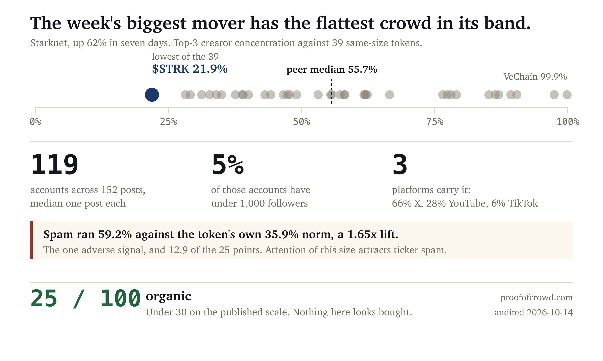

| Metric | $STRK | Read |
|---|---|---|
| Creator concentration (top 3) | 21.9% | 0th percentile of 39 peers, median 55.7% |
| Distinct accounts | 119 across 152 posts | median one post each |
| Accounts under 1,000 followers | 5% | median account has 26,000 |
| Platform mix | 66% X, 28% YouTube, 6% TikTok | three surfaces, not one |
| Repeated wording across accounts | 2.0% | one cluster, a multi-ticker list post |
| Cross-token accounts | 32.9% | 49th percentile, at the peer median |
| Spam vs the token's own norm | 0.592 vs 0.359 (1.65x) | elevated, the one adverse signal |
| Contributors per day | 227 → 1,397 over six days | a sixfold expansion |
| Manufactured score | 25/100 | organic (under 30) |
Score computed with the published formula in the open hype-detector project: spam lift 12.9, spam share 11.8, concentration 0.0, sentiment uniformity 0.0. Concentration is ranked against same-size peers, so a token at its peer median is not charged for being small.
Measured over 152 posts on the verified topic starknet, which runs 82.6% on-topic with 94.5% of the top three creators' posts on-topic. The bare strk topic was not used.
119 distinct accounts produced those 152 posts. The median account posted once and the busiest posted nine times, and that account is Starknet's own.
| Account | Share of interactions | Followers | Posts |
|---|---|---|---|
| Starknet (the project) | 10.7% | 352,605 | 9 |
| Cointelegraph | 5.7% | 2,928,996 | 3 |
| TedPillows | 5.5% | 319,582 | 1 |
| crypto.erke | 4.5% | 22,779 | 1 |
| ClarissaYorke | 4.4% | 2,373,453 | 1 |
| paulbarronnetwork | 3.3% | 2,710,000 | 1 |
Top three combined: 21.9%. Against 39 peers of the same size that is the lowest reading in the band. The median peer sits at 55.7% and the band contains tokens above 90%, where three accounts are effectively the entire conversation.
The follower distribution is the second reason to read this as a real crowd. Six of 119 accounts have under 1,000 followers and two have under 100. The median account has 26,000 followers and the 75th percentile has 150,000. A purchased wave inverts that shape: the accounts are numerous, new and small.
Three platforms carry the conversation rather than one. 66% of posts are on X, 28% are YouTube videos and 6% are TikTok. Coordinated pushes concentrate on a single surface, because that is what gets bought.
On 2026-10-13, the last complete day, 280 of 473 posts carried the spam flag, a 59.2% share against the token's own 30-day median of 35.9%. That is a 1.65x lift and it contributes 12.9 of the 25 points.
The absolute share is close to useless on its own. It runs chronically high for some tokens, and the upstream counting changed in 2023 to the point where the spam field can exceed the post count on a given day. The 2026-10-14 row does exactly that, 258 spam against 179 posts, which is why the scoring uses the last complete day and never the day in progress.
What the lift says is that the share rose against the token's own habit, not that a campaign exists. Attention of this size attracts reply-guys and ticker spam whoever is behind the move, and the elevated share sits alongside a creator distribution flatter than every peer in the band. Both readings are in the table because both are in the data.
6.0% of the 152 posts are near-duplicates of another post, and 2.0% are duplicated across three or more separate accounts. That is one cluster, and the cluster is a laundry-list post naming STRK among eight other tickers.
Against the ethereum control over the same window, 13.0% of posts are near-duplicates and 0.0% are duplicated across three or more accounts. The duplication here is ordinary.
32.9% of interactions come from accounts also active in three or more other tokens in the scanned population. That is the 49th percentile of the band, sitting on the peer median. The median account in the Starknet conversation appears in zero other tokens and the busiest appears in nine.
The two largest amplifiers by interaction volume, at roughly 296,000 and 250,000, appear in no other scanned token at all. That is the opposite of the promiscuous-amplifier pattern.
The onchain side is not reported. STRK is native to Starknet L2, and the Ethereum contract people look the token up on holds a bridged slice rather than the supply. Reconstructing holder sets on Starknet needs a different client from the EVM path this tooling uses, so a distribution figure would describe the bridge rather than the token. It is left out instead of being reported with a caveat.
No claim is made about who is behind any account, and no motive is established. Concentration, duplication and cross-token patterns are compatible with bots, coordinated advocacy, and unusually tight real communities alike. This audit reports patterns rather than actors, and takes no view on the token's technology or its team.
Social data from LunarCrush over the period ending 2026-10-14, on a topic verified as genuinely about the token by reading its highest-interaction posts before any figure was computed. Peer ranks are against 39 same-size tokens drawn from a population of 123 whose topics were each verified the same way and rescanned on the day of this audit.
Why the verification step exists. The raw screen that surfaced this week's movers flagged six tokens for a fresh spam wave, and four of the six are tickers that are also ordinary words. bat returns a livestream, amp returns 0% token-related posts across 328, rlc returns a Hot Wheels collector club, and kaia returns 11 posts, under the volume floor. Two survived verification. Every percentile on this page is ranked against a population where that check has been run on each member.
This audit was not commissioned, and no one associated with the project was contacted before publication.
A note on sample selection. The other published specimens scored 98/100 and came back manufactured, 21/100 and came back organic, 22/100 with one published claim that did not hold, and 25/100 with most of the token on another chain. All five are shown because a method that only ever finds problems is not measuring anything.